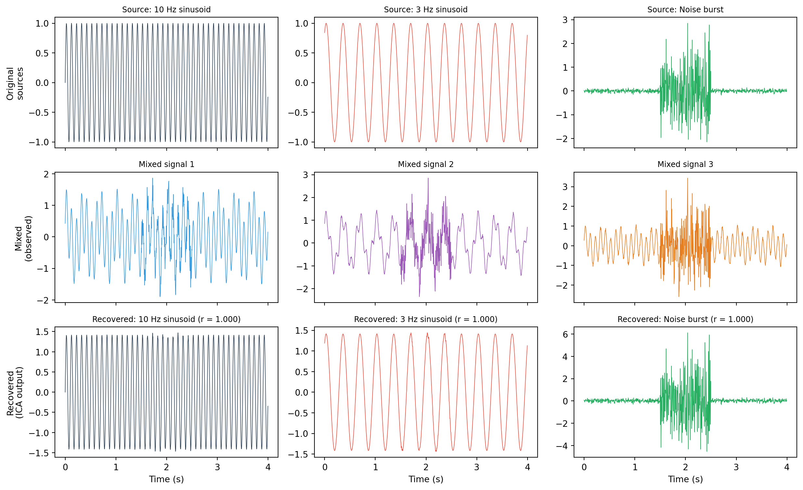

The cocktail party problem, the linear mixing model, statistical independence, non-Gaussianity, how ICA algorithms find the unmixing matrix using negentropy and mutual information, and the limitations of the approach.
Published
31 March 2026
Modified
31 March 2026
Overview
The practical ICA page covers how to use ICA in MNE-Python: fitting the model, identifying artifact components, and reconstructing clean data. This page goes deeper into the mathematics. Why does ICA work? What assumptions does it require? How do the algorithms actually find the unmixing matrix? Understanding these foundations helps you make better decisions when applying ICA and helps you recognise situations where the method might fail.
The cocktail party problem
Imagine three microphones in a room where three people are speaking at the same time. Each microphone picks up a different mixture of the three voices. The cocktail party problem asks: can we recover the original voices from the mixtures, without knowing how the room mixes the sounds?
The answer is yes, as long as the voices are statistically independent of each other. ICA is the algorithm that solves this problem.
In EEG, the electrodes are the microphones and the sources are brain regions and artifact generators (eye muscles, heart, scalp muscles). Each electrode records a mixture of these sources. ICA recovers the original sources from the mixtures.
The linear mixing model
ICA assumes that the observed data are a linear mixture of unknown source signals. If we have \(n\) electrodes and \(n\) sources, the model is:
\[\mathbf{x}(t) = \mathbf{A} \, \mathbf{s}(t)\]
where:
\(\mathbf{x}(t) \in \mathbb{R}^n\) is the vector of observed signals at time \(t\) (one value per electrode)
\(\mathbf{s}(t) \in \mathbb{R}^n\) is the vector of source signals at time \(t\) (one value per source)
\(\mathbf{A} \in \mathbb{R}^{n \times n}\) is the mixing matrix: each column of \(\mathbf{A}\) describes how one source projects onto the electrodes
Each observed signal \(x_i(t)\) is a weighted sum of all sources: \(x_i(t) = a_{i1} s_1(t) + a_{i2} s_2(t) + a_{i3} s_3(t)\).
The goal of ICA is to find the unmixing matrix\(\mathbf{W} = \mathbf{A}^{-1}\) so that:
\[\mathbf{s}(t) = \mathbf{W} \, \mathbf{x}(t)\]
recovers the original sources. We do not know \(\mathbf{A}\), we do not know \(\mathbf{s}(t)\), and we only observe \(\mathbf{x}(t)\). ICA finds \(\mathbf{W}\) using only the statistical properties of the data.
The assumptions
ICA requires two main assumptions and has one important ambiguity.
1. Statistical independence
The source signals must be statistically independent. Two random variables \(s_i\) and \(s_j\) are independent if their joint probability distribution factorises:
\[p(s_i, s_j) = p(s_i) \cdot p(s_j)\]
This is stronger than uncorrelatedness. Uncorrelated variables satisfy \(E[s_i \cdot s_j] = E[s_i] \cdot E[s_j]\), which is a statement about second-order statistics (means and covariances). Independence requires this to hold for all orders of statistics.
For EEG, the independence assumption is reasonable because the sources we want to separate (different brain regions, eye muscles, heart, scalp muscles) are driven by different physiological mechanisms. An eye blink has nothing to do with occipital alpha activity, so the two signals are approximately independent.
2. Non-Gaussianity
At most one source can have a Gaussian (normal) distribution. This is a mathematical necessity, not a practical inconvenience. Here is why.
If all sources were Gaussian and uncorrelated, their joint distribution would be a symmetric, spherical cloud in \(n\)-dimensional space. Any rotation of this cloud would produce another set of uncorrelated Gaussian signals. There would be infinitely many valid unmixing matrices, and ICA could not determine which one is correct.
Non-Gaussian distributions have structure (skewness, heavy tails, peaks) that is destroyed by mixing and can be recovered by unmixing. ICA exploits this structure to find the correct rotation.
For EEG, this condition is easily satisfied. Eye blinks have a highly non-Gaussian distribution (mostly zero, with occasional large spikes). Brain oscillations are non-Gaussian (their amplitude envelope varies over time). Even background noise in EEG tends to have heavier tails than a Gaussian distribution.
Ambiguities: scale and order
ICA cannot determine the amplitude of the sources or their order. If \(\mathbf{s}\) is a solution, then so is any version where the sources are rescaled or rearranged. In practice this does not matter: the scaling information is absorbed into the mixing matrix, and we can reorder components however we like.
Preprocessing: centring and whitening
Before running ICA, two preprocessing steps are applied to the data.
Centring
Subtract the mean from each channel so that the data have zero mean:
where \(\mathbf{V}\) is chosen so that \(E[\mathbf{z}\mathbf{z}^T] = \mathbf{I}\) (the identity matrix). This is done using PCA (principal component analysis): the eigenvectors of the covariance matrix provide the rotation, and the eigenvalues provide the scaling.
Whitening simplifies the ICA problem. After whitening, the mixing matrix becomes an orthogonal matrix (a rotation), because:
and since the sources are independent (hence uncorrelated) with unit variance, \(\tilde{\mathbf{A}}\) must satisfy \(\tilde{\mathbf{A}}\tilde{\mathbf{A}}^T = \mathbf{I}\), which means \(\tilde{\mathbf{A}}\) is orthogonal. Finding an orthogonal matrix is easier than finding an arbitrary matrix, because it has fewer free parameters.
How ICA finds the unmixing matrix
The core idea is: find the rotation of the whitened data that makes the components as non-Gaussian as possible. The Central Limit Theorem tells us that mixtures of independent signals tend towards Gaussianity, so the most non-Gaussian projections correspond to the original, unmixed sources.
Different ICA algorithms use different measures of non-Gaussianity.
Negentropy (used by FastICA)
Negentropy measures how far a distribution is from Gaussian. A Gaussian distribution has the highest entropy (the most randomness) among all distributions with the same variance. Negentropy is defined as:
\[J(y) = H(y_{\text{gauss}}) - H(y)\]
where \(H\) is the differential entropy and \(y_{\text{gauss}}\) is a Gaussian variable with the same mean and variance as \(y\). Negentropy is always non-negative, and it is zero only for a Gaussian distribution.
Computing entropy directly is difficult, so FastICA uses an approximation based on non-linear functions \(G\):
where \(\nu\) is a standard Gaussian variable. Common choices for \(G\) include \(G(u) = \log\cosh(u)\) (the default in most implementations) and \(G(u) = -\exp(-u^2/2)\).
FastICA finds each component by iteratively maximising this approximation of negentropy. The algorithm uses a fixed-point iteration:
Choose a random initial weight vector \(\mathbf{w}\).
Here \(g\) is the derivative of \(G\), and \(g'\) is the second derivative. After finding one component, the algorithm deflates (removes its contribution) and finds the next.
Mutual information (used by Infomax)
Mutual information measures the total statistical dependence among a set of variables:
It is zero when all variables are independent, and positive otherwise. ICA can be formulated as minimising the mutual information among the estimated sources.
The Infomax algorithm (Bell and Sejnowski, 1995) approaches this differently. It maximises the information transfer through a simple neural network: the data are passed through a linear transformation (the unmixing matrix) followed by a non-linear squashing function (such as the logistic sigmoid). The weights are adjusted using gradient descent to maximise the entropy of the output.
It can be shown that maximising the output entropy is equivalent to minimising the mutual information among the estimated sources, as long as the non-linearity matches the distribution of the sources.
The extended Infomax algorithm (Lee et al., 1999) adapts the non-linearity automatically, allowing it to handle both sub-Gaussian sources (distributions with lighter tails than a Gaussian, like a uniform distribution) and super-Gaussian sources (distributions with heavier tails, like eye blinks). This makes it more general and more reliable for EEG data.
What makes a “good” decomposition
How do you know whether ICA has produced a useful result? There are several indicators.
Physiological plausibility: the spatial patterns (topographies) of the components should correspond to known sources. A blink component should have a strong frontal projection. A posterior alpha component should be concentrated over occipital electrodes. If the topographies look random or uninterpretable, ICA may not have converged properly.
Stability across runs: if you run ICA twice on the same data, the components should be similar (up to reordering). FastICA can produce different results on different runs because it is sensitive to the random initialisation. Infomax tends to be more stable. If the results change substantially between runs, try increasing the number of iterations or using a different algorithm.
Residual dependence: after ICA, the estimated sources should be approximately independent. You can check this by computing the pairwise correlations between components (they should be near zero after whitening, but checking higher-order dependence is harder).
Explained variance: each component explains a certain proportion of the total variance. In EEG, a few components typically explain most of the variance (the largest artifacts and the strongest brain rhythms), while many components explain very little (background noise). A scree plot of explained variance can help you decide how many components to keep.
Limitations
ICA is a powerful method, but it has clear limitations that you should keep in mind.
Linearity: ICA assumes that the observed signals are linear mixtures of the sources. Volume conduction in the head is approximately linear, but there are non-linear interactions in the brain (e.g., cross-frequency coupling) that ICA cannot model. If two brain sources interact non-linearly, ICA may not separate them correctly.
Stationarity: ICA assumes that the mixing matrix \(\mathbf{A}\) does not change over time. In practice, electrode positions shift (especially in long recordings), impedances change, and the participant moves. If the mixing changes substantially during the recording, ICA may produce components that are mixtures of different sources at different times.
Square mixing: the standard ICA model requires as many sources as sensors. If there are more sources than electrodes (which is certainly true for the brain, where thousands of cortical patches contribute to the signal), ICA can only recover a subset of the sources. The components it finds are not individual brain sources but rather “maximally independent” linear combinations of multiple sources.
Data requirements: ICA needs enough data to estimate the statistics of the sources. As a rule of thumb, you need at least \(k^2\) to \(20 \times k^2\) time points, where \(k\) is the number of components. For 64 components, that means at least 4,096 to 81,920 time points. At 256 Hz, that is 16 seconds to 5 minutes of data. Short recordings may not provide enough data for stable ICA.
Gaussian sources: if a source is truly Gaussian (which can happen for diffuse background noise), ICA cannot separate it from other Gaussian sources. In practice, this is rarely a problem for EEG because most sources of interest are non-Gaussian.
Working example
The code below demonstrates the unmixing problem with three simple signals: two sinusoids at different frequencies and a noise burst. We mix them with a known mixing matrix, then use FastICA from scikit-learn to recover the originals.
import numpy as npimport matplotlib.pyplot as pltfrom sklearn.decomposition import FastICArng = np.random.default_rng(42)# ── Create three source signals ───────────────────────────────sfreq =256duration =4n_samples = sfreq * durationtimes = np.arange(n_samples) / sfreq# Source 1: 10 Hz sinusoids1 = np.sin(2* np.pi *10* times)# Source 2: 3 Hz sinusoid with a different phases2 = np.sin(2* np.pi *3* times +1.0)# Source 3: noise burst (non-Gaussian: mostly silent, with a loud burst)s3 = np.zeros(n_samples)burst_start =int(1.5* sfreq)burst_end =int(2.5* sfreq)s3[burst_start:burst_end] = rng.standard_normal(burst_end - burst_start)# Add a small amount of noise everywheres3 +=0.05* rng.standard_normal(n_samples)sources = np.vstack([s1, s2, s3])# ── Define the mixing matrix ─────────────────────────────────A = np.array([ [1.0, 0.5, 0.3], [0.4, 1.0, 0.6], [0.7, 0.3, 1.0]])# ── Mix the sources ───────────────────────────────────────────mixed = A @ sources# ── Run FastICA ───────────────────────────────────────────────ica = FastICA(n_components=3, random_state=42, max_iter=1000)recovered = ica.fit_transform(mixed.T).T# ICA recovers sources up to sign and scale ambiguity.# Fix the sign so they match the originals for display.for i inrange(3): corr = np.corrcoef(sources[i], recovered[i])[0, 1]if corr <0: recovered[i] *=-1# Match recovered components to original sources by correlationfrom itertools import permutationsbest_perm =Nonebest_score =-np.inffor perm in permutations(range(3)): score =sum(abs(np.corrcoef(sources[i], recovered[perm[i]])[0, 1])for i inrange(3) )if score > best_score: best_score = score best_perm = permrecovered = recovered[list(best_perm)]# Fix signs again after reorderingfor i inrange(3):if np.corrcoef(sources[i], recovered[i])[0, 1] <0: recovered[i] *=-1# ── Visualisation ─────────────────────────────────────────────fig, axes = plt.subplots(3, 3, figsize=(13, 8), sharex=True)source_labels = ["10 Hz sinusoid", "3 Hz sinusoid", "Noise burst"]source_colours = ["#2c3e50", "#e74c3c", "#27ae60"]mixed_colours = ["#3498db", "#9b59b6", "#e67e22"]# Top row: original sourcesfor i inrange(3): ax = axes[0, i] ax.plot(times, sources[i], color=source_colours[i], linewidth=0.6) ax.set_title(f"Source: {source_labels[i]}", fontsize=9)if i ==0: ax.set_ylabel("Original\nsources")# Middle row: mixed signalsfor i inrange(3): ax = axes[1, i] ax.plot(times, mixed[i], color=mixed_colours[i], linewidth=0.6) ax.set_title(f"Mixed signal {i +1}", fontsize=9)if i ==0: ax.set_ylabel("Mixed\n(observed)")# Bottom row: recovered sourcesfor i inrange(3): ax = axes[2, i] ax.plot(times, recovered[i], color=source_colours[i], linewidth=0.6) corr = np.corrcoef(sources[i], recovered[i])[0, 1] ax.set_title(f"Recovered: {source_labels[i]} (r = {corr:.3f})", fontsize=9) ax.set_xlabel("Time (s)")if i ==0: ax.set_ylabel("Recovered\n(ICA output)")plt.tight_layout()plt.show()# Print the mixing matrix comparisonprint("True mixing matrix A:")print(np.array2string(A, precision=2))print(f"\nRecovery correlations: "+", ".join(f"{np.corrcoef(sources[i], recovered[i])[0, 1]:.4f}"for i inrange(3)))

ICA unmixing demonstration. Top: three original source signals (10 Hz sine, 3 Hz sine, and a noise burst). Middle: the three mixed signals as observed at the ‘electrodes’. Bottom: the signals recovered by FastICA, showing successful separation of the three sources.
The top row shows the three original source signals: a 10 Hz sinusoid, a 3 Hz sinusoid, and a noise burst. The middle row shows the three mixed signals as they would appear at the “electrodes”: each is a different weighted sum of the sources, and the individual sources are no longer recognisable by eye. The bottom row shows the signals recovered by FastICA. The correlation between each recovered signal and the corresponding original is close to 1.0, confirming that ICA has successfully separated the sources.
Notice that the recovered signals are rescaled (different amplitude from the originals). This is the scale ambiguity mentioned earlier: ICA cannot determine the absolute amplitude of the sources. In EEG applications, this does not matter because the amplitude information is preserved in the mixing matrix columns, which give the scalp topography of each component.
Key takeaways
ICA assumes that the observed data are a linear mixture of statistically independent sources: \(\mathbf{x} = \mathbf{A}\mathbf{s}\). The goal is to find the unmixing matrix \(\mathbf{W} = \mathbf{A}^{-1}\).
The two requirements are statistical independence (the sources must be independent, not just uncorrelated) and non-Gaussianity (at most one source can be Gaussian). Both are satisfied by typical EEG data.
Whitening (PCA-based decorrelation and scaling) simplifies the problem by reducing the search from an arbitrary matrix to an orthogonal rotation.
FastICA finds components by maximising negentropy (a measure of departure from Gaussianity). It is fast but can give different results across runs.
Infomax minimises mutual information among components by maximising the entropy of a non-linearly transformed output. The extended version handles both sub-Gaussian and super-Gaussian sources and is the preferred algorithm for EEG.
ICA has known limitations: it assumes linear, stationary mixing, it requires enough data for stable estimation, and it cannot separate more sources than sensors.
A good ICA decomposition produces components with physiologically plausible topographies and stable results across repeated runs.